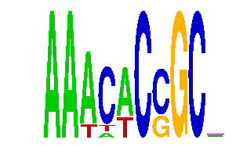

family_13 |
|---|
|  |
| Download PWM |
| Download instances (motifs) |
| Show motif distribution |
Query_ID | Query_Consensus | Subject_Name | Source_DB | Subject_ID | Length | Orientation | Offset | Divergence | Overlap | Subject_Consensus |
|---|---|---|---|---|---|---|---|---|---|---|
| family_13 | AAACACCGCN | FOXA1 | JASPAR | MA0148.1 | 11 | reverse-complement | -6 | 0.509 | 5 | TGTTTACTYTG |
| family_13 | AAACACCGCN | FOXA2 | HOCOMOCO | FOXA2_HUMAN.H10MO.A | 11 | reverse-complement | -6 | 0.553 | 5 | TGTTTACTYAG |
| family_13 | AAACACCGCN | FOXO3 | JASPAR | MA0157.1 | 8 | as given | -3 | 0.744 | 5 | TGTAAACA |
| family_13 | AAACACCGCN | HXC13 | HOCOMOCO | HXC13_HUMAN.H10MO.D | 11 | reverse-complement | -6 | 0.842 | 5 | NNTTTTACNAG |
| family_13 | AAACACCGCN | Foxa2 | JASPAR | MA0047.2 | 12 | reverse-complement | -7 | 0.873 | 5 | TGTTTACWTAGN |
Sequence | Start_position (from start) | Start_position (from end) | Average conservation | Best conservation score | Instance_with_best_CS | Best_Z-score | Instance_with_best_ZS | Strand |
|---|---|---|---|---|---|---|---|---|
| chr11:109483572-109484572 | 616 | 626 | 0.0208 | 0.052 | AAWCWCCGC. | 18.510056 | AAWCACCGC. | -1 |
| chr2:76818278-76819278 | 457 | 467 | 0.0161 | 0.087 | AAWCWCCGC. | 18.510172 | AAWMACCGCC | 1 |
| chr10:116164613-116165613 | 778 | 788 | 0.0014 | 0.004 | AAACWCCGC. | 17.067163 | AAWCWCCGC. | 1 |
| chr8:14995708-14996708 | 773 | 783 | 0.0087 | 0.021 | AAAYWCCGC. | 17.552736 | AAAYWCCGC. | 1 |
| chr6:141701944-141702944 | 567 | 577 | NA | NA | AAACWCSGC. | 16.941982 | AAACWCSGC. | 1 |
| chr13:39103220-39104220 | 902 | 912 | 0.0302 | 0.052 | AAACWCSGC. | 16.941982 | AAACWCSGC. | -1 |
| chr16:59516560-59517560 | 729 | 739 | 0.0009 | 0.004 | AAWCACCGCM | 17.552736 | AAAYWCCGC. | 1 |
| chr4:149656934-149657934 | 652 | 662 | 1 | 1 | AAACWCSGC. | 16.941982 | AAACWCSGC. | 1 |
| chr10:116381892-116382892 | 156 | 166 | 0.0291 | 0.14 | AAACWCSGC. | 18.510056 | AAACWCCGC. | 1 |
| chr2:60353682-60354682 | 585 | 595 | 0.0016 | 0.003 | AAACWCSGC. | 16.941982 | AAACWCSGC. | 1 |
| chr10:76551921-76552921 | 516 | 526 | 0.0084 | 0.012 | AAACWCSGC. | 16.941982 | AAACWCSGC. | 1 |
| chr7:149846298-149847298 | 220 | 230 | 0.9478 | 0.994 | AAWCACCGC. | 17.067163 | AAWCWCCGC. | 1 |
| chr16:34262381-34263381 | 952 | 962 | 0.0002 | 0.001 | AAWMACCGCC | 18.510172 | AAWMACCGCC | 1 |
| chr8:49596149-49597149 | 336 | 346 | 0.0001 | 0.001 | AAAYWCCGC. | 17.552736 | AAAYWCCGC. | -1 |
| chr12:70675026-70676026 | 502 | 512 | 0 | 0 | AAACWCSGC. | 16.941982 | AAACWCSGC. | -1 |
| chr10:116460642-116461642 | 756 | 766 | 0.0783 | 0.2 | AAWCWCCGC. | 16.767763 | AAWCACCGCM | 1 |
| chr12:9587059-9588059 | 738 | 748 | 0.9372 | 0.995 | AAACWCCGC. | 17.067163 | AAWCWCCGC. | 1 |
| chr19:53772385-53773385 | 379 | 389 | 0.1487 | 0.522 | AAACWCSGC. | 18.510056 | AAACWCCGC. | 1 |
| chr3:68386937-68388648 | 11 | 21 | 0.0027 | 0.011 | AAACWCSGC. | 16.941982 | AAACWCSGC. | -1 |
| chr3:51451773-51452773 | 824 | 834 | 0.0171 | 0.032 | AAWCWCCGC. | 18.510056 | AAACWCCGC. | -1 |
| chr4:120284883-120286823 | 639 | 649 | 0.1603 | 0.361 | AAACWCSGC. | 16.941982 | AAACWCSGC. | 1 |
| chr11:17360526-17361526 | 357 | 367 | 0.227 | 0.342 | AAWMACCGCC | 18.510172 | AAWMACCGCC | 1 |
| chrX:91611099-91612099 | 401 | 411 | 0.0007 | 0.003 | AAWCWCCGC. | 17.067163 | AAWCWCCGC. | 1 |
| chr13:51269676-51270676 | 339 | 349 | 0.9891 | 1 | AAWCWCCGC. | 18.510172 | AAWMACCGCC | 1 |
| chr8:71080351-71081351 | 473 | 483 | 0.0006 | 0.002 | AAWCWCCGC. | 18.510056 | AAWCACCGC. | 1 |
| chr10:22535942-22536942 | 96 | 106 | 0.0023 | 0.004 | AAACWCSGC. | 18.510056 | AAACWCCGC. | -1 |
| chr14:63986546-63987546 | 891 | 901 | 0.0137 | 0.052 | AAWCWCCGC. | 18.510056 | AAWCACCGC. | 1 |
| chr17:86935266-86936266 | 457 | 467 | 0.1837 | 0.886 | AAACWCSGC. | 16.941982 | AAACWCSGC. | -1 |
| chrX:165216294-165217294 | 481 | 491 | 0.9988 | 1 | AAWCACCGC. | 17.067163 | AAWCWCCGC. | 1 |
| chr14:105988338-105989338 | 510 | 520 | 0.0408 | 0.107 | AAWCWCCGC. | 18.510056 | AAWCACCGC. | -1 |
| chr19:53753431-53754431 | 559 | 569 | 0.9288 | 0.959 | AAAYWCCGC. | 17.552736 | AAAYWCCGC. | 1 |
| chr5:97816190-97817190 | 432 | 442 | 0.01 | 0.025 | AAWMACCGCC | 18.510172 | AAWMACCGCC | 1 |
| chr12:53955433-53956433 | 914 | 924 | 0.0023 | 0.007 | AAWCWCCGC. | 18.510056 | AAWCACCGC. | -1 |
| chr12:25648313-25649313 | 11 | 21 | 0.0082 | 0.062 | AAACWCSGC. | 16.941982 | AAACWCSGC. | -1 |
| chr14:55615723-55616723 | 688 | 698 | 0.0004 | 0.002 | AAACWCSGC. | 16.767763 | AAWCACCGCM | 1 |
| chr10:7849902-7850902 | 466 | 476 | 0.0389 | 0.084 | AAACWCSGC. | 16.941982 | AAACWCSGC. | 1 |
| chr7:80537851-80538851 | 735 | 745 | 0.83 | 0.918 | AAAYWCCGC. | 17.552736 | AAAYWCCGC. | 1 |
| chr5:151910688-151911688 | 702 | 712 | 0.5541 | 1 | AAWCWCCGC. | 17.067163 | AAWCWCCGC. | -1 |
| chr19:25740204-25741204 | 46 | 56 | 0.054 | 0.096 | AAWMACCGCC | 18.510172 | AAWMACCGCC | -1 |
| chr7:38952015-38953015 | 442 | 452 | 0.0198 | 0.028 | AAAYWCCGC. | 17.552736 | AAAYWCCGC. | 1 |
| chr2:90805055-90806055 | 484 | 494 | 0.0014 | 0.012 | AAACWCSGC. | 16.941982 | AAACWCSGC. | 1 |
| chr5:100643632-100644632 | 838 | 848 | NA | NA | AAACWCSGC. | 16.941982 | AAACWCSGC. | 1 |
| chr19:53161530-53162530 | 287 | 297 | 0.1953 | 0.49 | AAWCACCGC. | 17.067163 | AAWCWCCGC. | -1 |
| chr8:94396308-94397308 | 233 | 243 | 1 | 1 | AAACWCSGC. | 16.941982 | AAACWCSGC. | 1 |
| chr13:114452978-114453978 | 370 | 380 | 0.9088 | 1 | AAACWCCGC. | 17.552736 | AAAYWCCGC. | 1 |
| chr7:120099953-120100953 | 145 | 155 | 0.0057 | 0.038 | AAWCWCCGC. | 17.067163 | AAWCWCCGC. | 1 |
| chr16:10843563-10844563 | 981 | 991 | 0.0007 | 0.003 | AAACWCSGC. | 16.941982 | AAACWCSGC. | -1 |
| chr14:80044732-80045732 | 162 | 172 | 0.072 | 0.345 | AAACWCSGC. | 16.767763 | AAWCACCGCM | 1 |